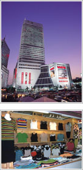
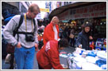

|
| 購物指南 | 購物指南 | 熱門商品 |
|  | 服裝批發市場(服裝購物中心) |
| 集中在東大門等地的服裝批發商家們正在創造韓國的新型購物文化。在現代而高大的樓群�堙A聚集著上百甚至上千個服裝批發商，因此，在逛這種批發市場時，需要記住以下幾點注意事項。 | |
| 第一 要穿舒服的鞋子。想逛全上百甚至上千個商家，需要花很多時間，走很多路，所以一定要穿合腳的鞋，而不要穿不舒服的鞋，讓腳痛苦。 |
|
| 第二 在小本上記住有滿意東西的店鋪的號碼，如果不記錄，只是想'這家東西不錯'然後轉上一圈，再想找回來就很難了。一定要及時在本子上記下店鋪前面的號碼。 |
|
| 第三 近來商家通常不留出討價的餘地，因此一般很難砍價，即使討價還價成功，也不會超過5%。韓國國內人買東西時，也一樣。商人們喊出的價格不再象從前一樣'水分'很大了。 |
| 老式市場 |  |
| 老式市場指的是保留了韓國舊時市場面貌的市場。通常不是在現代建築�堙A而是在矮矮的1層建築或者手推車�娷\上商品叫賣，來到這種市場購物時，不妨留意觀察一下人群的特點。人們在這�堣ㄥ�享受購物的樂趣，還可以隨意吃到各種小吃，悠悠閑閑，別有一番情趣。但是在這種市場通常不收美金或其他外 | |
| 幣，所以最好事先準備好韓幣。首爾的京東市場、廣場市場、南大門市場都保留著古老市場的風貌。當然，老式市場�堛漱]有一些貿易量大或外國人顧客多的商家接收外幣。 | |
| 百貨商場 | |
| 韓國的百貨商場通常春夏秋冬四季每個季節都舉辦一次酬賓活動，也就是1，4，7，10月舉辦，每次歷時2周。在酬賓期間，著名百貨店通常會在網頁上進行大量宣傳，所以建議大家可以看看各商場的網頁。另外還有一個方法是，可以打電話給韓國觀光公社的諮詢中心(Tel:+82-2-1330)詢問準確的酬賓活動時間，這�堛漱u作人員可以使用英語、漢語和日語回答您的問題。當然，您還要 | |
| 做好心理準備，因?酬賓時間韓國本國人來百貨商場購物的韓國本國人也多，所以顯得很擁擠。不夠，在酬賓活動期間購物確實經濟實惠，平時想買但因?價格不菲買不起的東西，在酬賓期間可以放心買回家。 | |